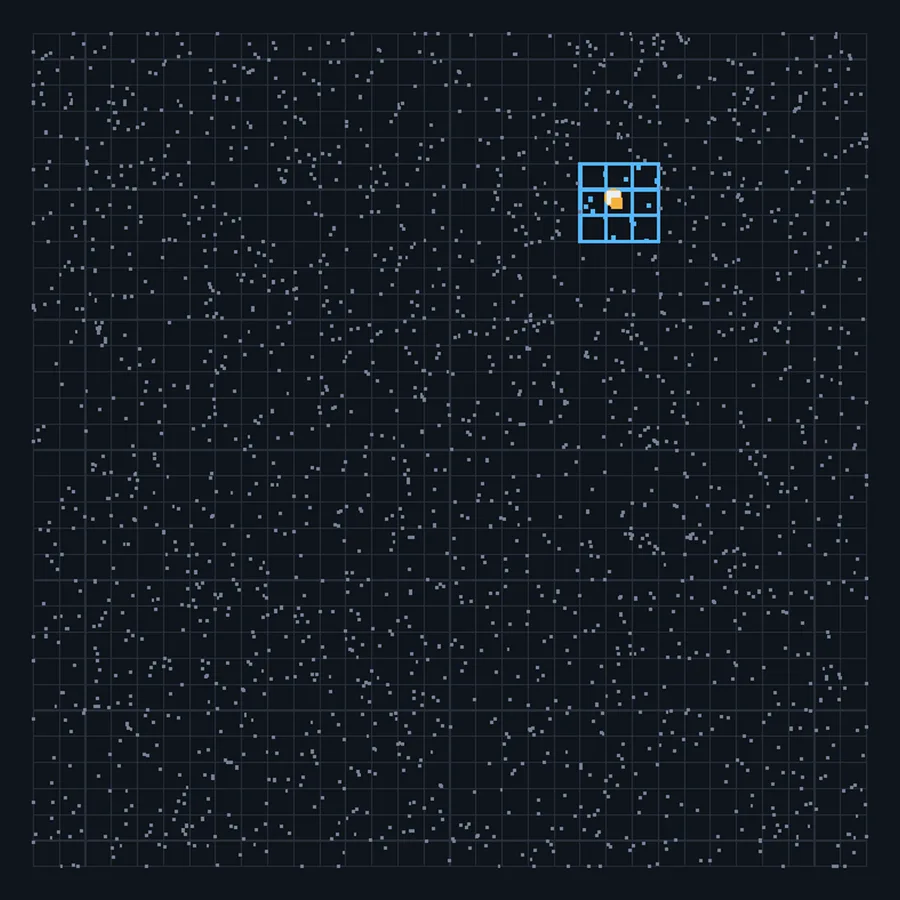
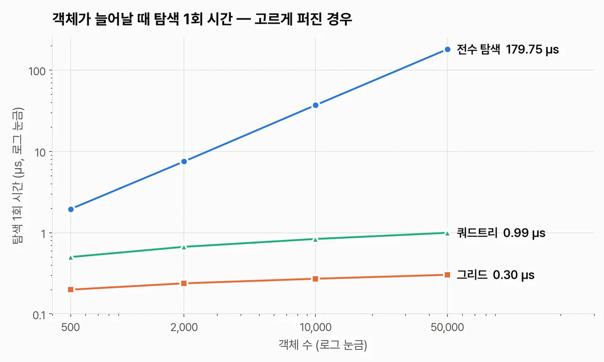

AI 협업 · Claude Code · Codex · Unreal MCP
판단과 검증은 제가,
반복과 조사는 AI가
AI가 만든 결과를 그대로 믿지 않습니다. 무엇을 만들지와 맞는지 아닌지는 제가 정하고, 빌드·측정·캡처 같은 반복 작업을 AI에 맡깁니다. 틀린 결과가 나오면 규칙 문서로 남겨 다음 지시에 넣습니다.
협업 원칙
제가 하는 일
- 주제 선정, 구현 방향과 비교 대상 결정
- 측정값이 말이 되는지 판단
- 플레이·영상을 직접 보고 통과 여부 결정
- 마음에 안 든 이유를 규칙으로 정리
AI에 맡기는 일
- 계획에 따른 코드 작성과 빌드 반복
- 자동 실행 · 측정 · 스크린샷 · 녹화
- 공식 문서와 레퍼런스 조사
- 글 초안, 내레이션 생성과 발음 검사
- 구현주제마다 UE 프로젝트에 레벨 하나 + 플러그인 하나를 추가합니다. 비교할 방식은 콘솔 스위치로 바꿔 끼웁니다.
- 검증명령줄 한 번으로 레벨을 열고, 측정하고, CSV와 스크린샷을 남기고, 스스로 종료합니다. 같은 조건으로 3회 돌려 중앙값을 씁니다.
- 글측정 CSV에 있는 숫자만 씁니다. 검증이 끝나기 전에는 글을 쓰지 않습니다.
- 영상실제 플레이 창을 녹화하고, 내레이션은 음성 인식으로 다시 읽어 틀린 발음을 찾습니다.
Unreal Engine 5.8C++Claude CodeUnreal MCP
GameTechLab
게임 기술 하나를 직접 구현하고, 같은 장면에서 방식을 바꿔 가며 재는 개인 실험 프로젝트입니다.

예시 · 가장 가까운 적 찾기
전수 탐색 · 그리드 · 쿼드트리를 같은 장면에서 비교
점 2,000개가 움직이는 장면에서 탐색 방식만 바꿔 1회 시간을 쟀습니다.
- 고르게 퍼졌을 때: 전수 탐색 7.48 µs → 그리드 0.24 µs (약 31배)
- 유닛마다 찾으면 전수 탐색은 한 프레임 약 14 ms, 그리드는 약 0.41 ms
- 객체가 그리드 칸보다 좁게 몰리면 쿼드트리가 그리드를 앞섬
AI가 측정 스크립트를 돌리고 표·그래프를 만들었고, 어느 조건에서 결론이 뒤집히는지는 제가 분포를 바꿔 가며 확인했습니다.

실패를 규칙으로
AI가 “완료”라고 해도 제가 보고 아니면 아닙니다. 대신 왜 아닌지를 문서로 남겨, 같은 실수가 다시 나오지 않게 합니다.
사례 · 영상 1차 결과물 반려
“AI가 만든 슬라이드처럼 보인다”
- 증상
- 첫 영상은 어두운 카드와 코드 화면, 문장마다 끊기는 내레이션으로 나왔습니다. 개발자가 자기 엔진을 보여 주는 느낌이 아니었습니다.
- 원인
- “영상 형식”에 대한 기준이 없어서 AI가 가장 쉬운 모양(생성된 카드)으로 채웠습니다.
- 해결
- 스타일 가이드 문서에 규칙을 추가했습니다: 실제 플레이 창만 녹화, 화면에 코드 금지, 내레이션은 문단 단위로 생성하고 속도 고정, 강조 그래픽은 엔진이 아닌 편집 단계에서.
- 결과
- 세 번째 버전에서 통과했고, 이후 주제는 같은 가이드로 시작합니다.
TODO(작성자 확인): 팀 프로젝트(Expedition_158 등)에서 AI를 어떻게 썼는지 사례가 있으면 여기에 한 블록 추가합니다. 사용한 도구, 맡긴 일과 직접 한 일, 숫자 하나(예: 계획 문서 수).